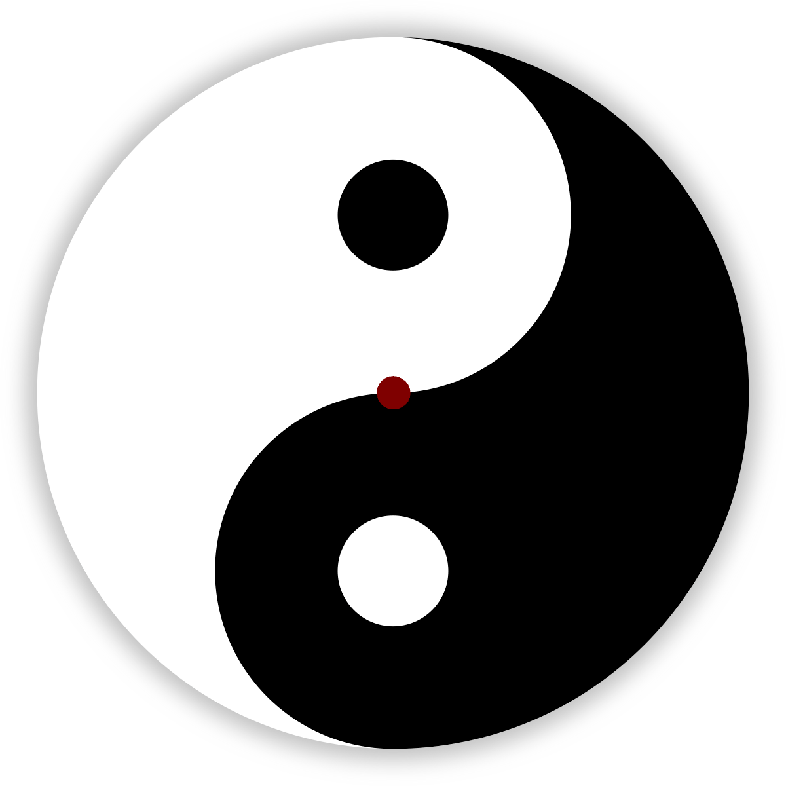

Choose your path
"Dwelling on the negative simply contributes to its power." — Shirley MacLaine
"Act as if what you do makes a difference. It does." — William James
"If you attach to the negative behaviour of others it brings you down to their level." — Guru Singh
"All our dreams can come true if we have the courage to pursue them." — Walt Disney
"All progress takes place outside the comfort zone." — Michael John Bobak
"Negativity is the enemy of creativity." — David Lynch
"Do what you can with all you have, wherever you are." — Theodore Roosevelt

Open new tab
"Dwelling on the negative simply contributes to its power." — Shirley MacLaine
"Act as if what you do makes a difference. It does." — William James
"If you attach to the negative behaviour of others it brings you down to their level." — Guru Singh
"All our dreams can come true if we have the courage to pursue them." — Walt Disney
"All progress takes place outside the comfort zone." — Michael John Bobak
"Negativity is the enemy of creativity." — David Lynch
"Do what you can with all you have, wherever you are." — Theodore Roosevelt
Check star sign